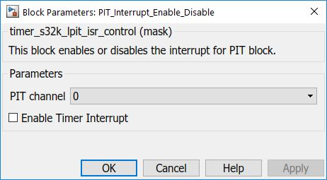

PIT Interrupt Enable/Disable Block
This block is used to enable/disable PIT interrupts
Block Image

Inputs:
- None
Outputs:
- None
Parameters and Dialog Box
PIT Channel
- 0 – 3
Enable Timer Interrupt
- Enable/Disable Timer Interrupt
Block Dependency
Please do the following:
- Configure related PIT channel via Periodic Interrupt Timer
Block Miscellaneous Details:
PIT channel 3 is also used by the profiler block it is present in the model.